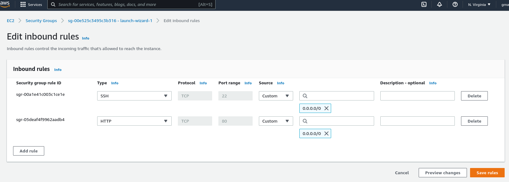
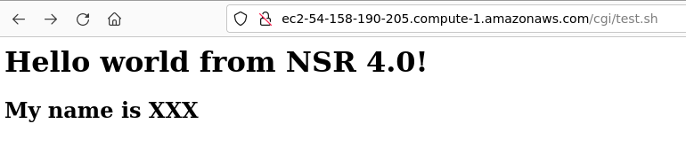
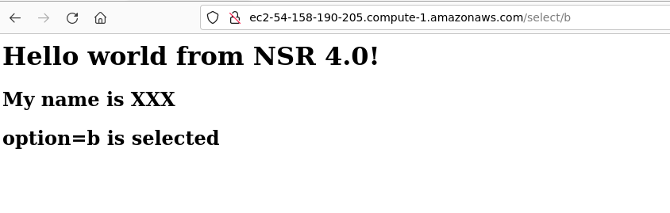

Basics
In computing, Common Gateway Interface (CGI) is an interface specification that enables web servers to execute an external program, typically to process user requests. Such programs are often written in a scripting language and are commonly referred to as CGI scripts, but they may include compiled programs. A typical use case occurs when a web user submits a web form on a web page that uses CGI. The form's data is sent to the web server within an HTTP request with a URL denoting a CGI script. The web server then launches the CGI script in a new computer process, passing the form data to it. The output of the CGI script, usually in the form of HTML, is returned by the script to the Web server, and the server relays it back to the browser as its response to the browser's request. Read more (Wikipedia).
Configuring Apache2 for CGI
The instructions below are given for ubuntu 22.04 instance. There might be small differences between Linux distributions, particularly with directory names.
- First, make sure that Apache 2 is installed. In this tutorial, our website is hosted under
/var/www/html/. Verify that the server is running in the background: runsystemctl status apache2; make sure it showsrunning. In some Linux distributions, the server name could behttpdinstead ofapache2 - Make sure your AWS instance listens to port
80(update your inboud security rules)  - Create a directory under your root website called
cgi
sudo mkdir /<root directory>/cgi
where <root directory> should be replaced by your website root directory. You can find your website root written somewhere in the apache config under DocumentRoot /var/www/html
* Give the directory 755 permission (read and execute for user and group) using chmod command with root (or sudo). Recall that execute permission for a directory means the ability to access the directory and see files.
* Open apache configuration with your favorite text editor (gedit, nano, vim,...etc). In Ubuntu, the main config file is /etc/apache2/apache2.conf. (The config is written in XML format, which is self-explanatory to a certain level; you may check the official documentation to have more insights)
* Once you open the file, you will notice that the config envokes all files under two directories, conf-enabled/ and sites-enabled/. Each of those files contains some segments of XML configs.
* You may pick /etc/apache2/sites-available/000-default.conf if it corresponds to your default website. Edit the file and include the configs below
```xml
<Directory /var/www/html/cgi>
AllowOverride None
Options +ExecCGI
AddHandler cgi-script .cgi .py .sh
Require all granted
</Directory>
```
It basically says that all files that have extensions `.cgi, .py, .sh` under the CGI directory `/var/www/html/cgi/` should be executable.
- Enable CGI module in Apache
cd /etc/apache2/mods-enabled
sudo ln -s ../mods-available/cgi.load
where in Ubuntu 22.04 (installed by apt package manager), all modules are listed under /etc/apache2/mods-available/. The second command simply creates a symlink (or shortcut) for cgi.load inside mods-enabled to indicate that CGI module needs to be loaded along with other apache modules
* Restart Apache through Systemd's utility systemctl restart apache2
Creating your first CGI script
- Navigate to your CGI directory
- Create a file named
test.cgi
sudo touch test.sh
- Change the permission of the file to be executable
sudo chmod +x test.sh
- Write a simple bash script that prints some HTML using
echocommand```bash #!/usr/bin/bash
echo -e "Content-type: text/html\n\n" echo "
Hello world! this is NSR 4.0
" echo "My name is XXX
"`` where the first line tells the OS which scripting language to use. The last two lines are simple HTML code, and theContent-type`is a part of the http header (notice the two empty lines and option -e for command echo).
- Go to your browser, and check your cgi script (replace the DNS with your own domain address). The output should be similar to the figure below (not some script source)

Simple RESTful API
The main idea is to learn how to redirect URL addresses to certain files.
We start first with a simple REST API using a module called rewrite.
- Enable module simply by navigating to
mode_enabled directoryand creating a sym link.
sudo ln -s ../mods-available/rewrite.load
- Restart Apache to ensure that the module is loaded
- Open apache config file that corresponds to the root site. Locate the
<Directory>...</Directory>directive, which includes the settings. In Ubuntu 22.04 instance, it looks like
```xml
Make sure `AllowOverride None` is set to `AllowOverride All`
* Restart Apache server (whenever you edit any apache config file, you must restart apache to enforce the changes)
* Enable mod rewrite in the config adding the following inside directive ` <Directory /var/www/html>`
RewriteEngine On
* Add to the above directive `<Directory /var/www/html>` a simple rule
RewriteRule X cgi/test.sh
The rule simply says the URL ending with X, will be redirected to CGI/test.sh. Basically, the link `http://<your-dns-address>/X` will lead to your `test.sh` script
* All `RewriteRules` abide by the following format:
RewriteRule pattern substitution [flags]
where
* `RewriteRule` specifies the directive.
* `pattern` is a [regular expression (Regex)](https://www.digitalocean.com/community/tutorials/an-introduction-to-regular-expressions) that matches the desired string from the URL, which is what the viewer types in the browser.
* `substitution` is the path to the actual URL, i.e. the path of the file Apache servers.
* `flags` are optional parameters that can modify how the rule works.
* If you add special flag `[NC]` to `RewriteRule X cgi/test.s [NC]`, then it becomes case insensitive, so both `x` and `X` lead to the same executable.
* Let's write a more generic rewrite rule using variables. A variable is enclosed in parenthesis `()`, following the Regex standard.
RewriteRule select/(a|b) cgi/test.sh?option=$1
For example, the above rule redirects `<url>/select/a` and `<url>/select/b` to `/cgi/test.sh` where `$1` takes values `a` and `b` for variable `option`. If you are not comfortable with Regex, you could write the above as two static rules
RewriteRule select/a cgi/test.sh?option=a
RewriteRule select/b cgi/test.sh?option=b
``
* Now, from the bash scripttest.shyou could read the input through the environment variable$QUERY_STRING`, which is set automatically by mod_rewrite.
* Try to write a simple bash script that outputs the figure below
